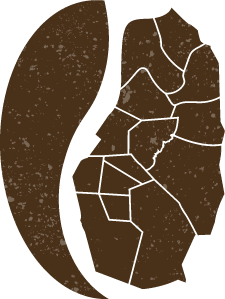

Digital Espresso: Filipino Cafe

About Digital Espresso
Digital Espresso is a local Filipino cafe made in partnership with Tawid Foundation.
The goal of Tawid Foundation is to rejuvenate the coffee industry in Benguet.
Suprisingly, majority of coffee in the country is imported despite the
perfect conditions in the Baguio area for growing not just Robusta, but also
the highly coveted Arabica coffee. By supporting Beanguet, you are able to
help the livelihood of the farmers in Benguet as well as contribute to the
crucial revival of the coffee industry in the country.